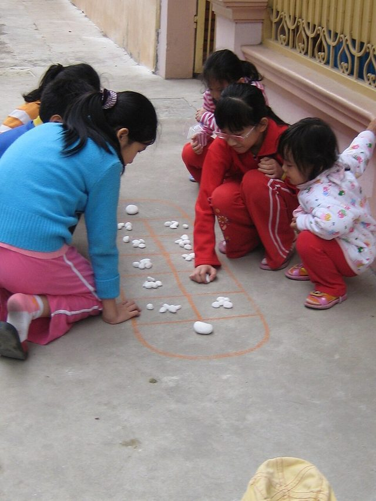

Home / Deep Past and First Games / Southeast Asia and the Islands
Encyclopedia ID 1216
Mandarin square capturing
Also known as O An Quan


Mancala game drawn on the ground; capture mandarin pieces and pebbles.
Heritage note
Part of the living heritage of Vietnam.
Origins
Usually placed in the era of Deep Past and First Games (before about 3000 BCE), although its exact origins are uncertain, within the cultural world of Southeast Asia and the Islands.
Play it
Sources
Related entries


Kisolo
DR Congo +1 · Board and table games
More from Vietnam

Co Ganh
Vietnam · Board and table games
Dan bau
Vietnam · Musical instruments
Gourd-crab dice
Vietnam · Board and table games
Hmong story cloth
China +3 · Crafts and making
Thung chai basket-boat spinning
Vietnam · Racing
Water puppet pond theatre
Vietnam · Performance and storytelling